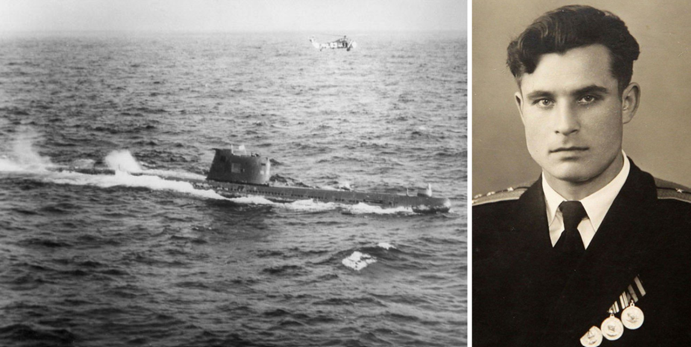
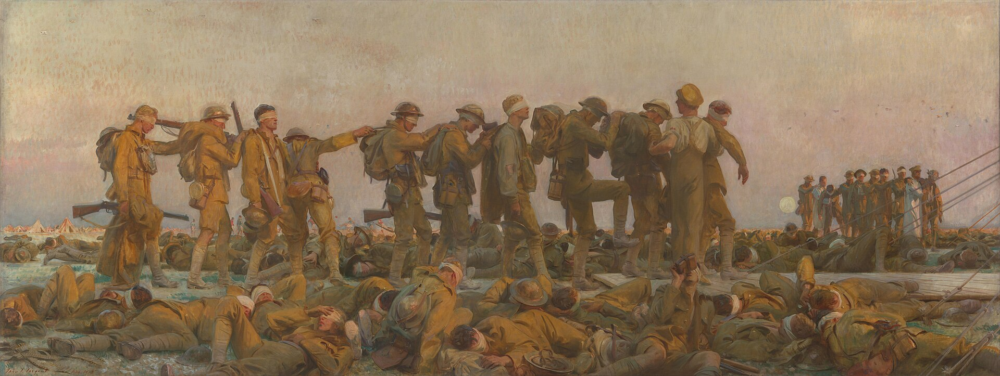

Why Hold Back in War?
Both the Russo-Ukrainian war and the Iran war have seen atrocities. In Iran, the U.S. bombing of a school in Minab killed at least 157, including 123 children. The Russian bombing of the Russian bombing of the theatre turned bomb shelter in Mariupol, killed an estimated 300-600 people. A United Nations report found that 90% of civilian deaths in Ukraine were from Russia’s indiscriminate bombing of populated areas, and Russia has repeatedly bombed medical facilities.
The destruction has been horrible, but the leaders of the great powers have threatened far worse. Russia has threatened to use nuclear weapons in response to conventional attacks against Russia or its allies that “created a critical threat to their sovereignty (or) their territorial integrity.” In a recent U.N. speech, President Trump mused whether he should “annihilate the Islamic Republic,” asking, “Do I drive them into hell with no chance of survival and no hope of future greatness or generations?”
So why haven’t Putin or Trump followed up on their rhetoric? In “Are Leaders Punished For Wars?” I presented research that leaders of democracies and vulnerable autocracies faced consequences for falling short of victory. If they think it will help them win, either leader may follow through on their threats and commit greater atrocities, perhaps even with a nuclear weapon or some other weapon of mass destruction (WMD).
While I cannot purport to understand the calculations of Vladimir Putin or Donald Trump, I can tell you what the research says about why leaders may show restraint in escalating conflicts, committing atrocities, and deploying WMDs during a war.
Taboos and Traditions
In 1945, the United States dropped nuclear bombs on Hiroshima and Nagasaki during World War II. No nuclear weapons have been used since, although there have been some close calls. Figure 2 shows the Soviet Union Submarine B-59 after being forced to surface during the Cuban Missile Crisis. Before surfacing, out of contact with the world, the submarine’s captain and political officer believed a war had begun and wanted to launch a nuclear torpedo. Vasily Arkhipov, the brigade chief of staff (and Soviet smokeshow), was also on board and opposed the attack. Vasily persuaded the captain to surface instead, leading one archive director to dub Vasily “the man who saved the world.”


.jpg){kind=link}
One explanation for the lack of nuclear war is deterrence and mutually assured destruction: I won’t use my nuclear weapons against you because then you will use your nuclear weapons against me. This can explain why two states with nuclear weapons, e.g., Russia and the U.S., have not used nuclear weapons against each other, but it does not explain why no one has used nuclear weapons against a non-nuclear state, i.e., Iran and Ukraine.
Scholars have theorized that nuclear weapons are not used more often because there is a taboo or a tradition against using them. Nina Tannenwald’s theory posits that there is a “normative inhibition against the first use of nuclear weapons” stemming from human revulsion of their destructiveness and fostered by a global antinuclear movement. In case studies, Tannenwald finds that this taboo operates through public and world opinion and out of personal conviction.1 This taboo has distinguished nuclear weapons from ‘conventional weapons’. It has also led nonnuclear states to ignore nuclear threats, seeing them as no longer credible since no one would want to break the taboo. This theory explains why non-nuclear states are not afraid to fight nuclear-armed states.2
T. V. Paul argues that the non-use of nuclear weapons is more a tradition than a taboo, which may seem a matter of semantics but is useful for thinking about the limits of any taboo. Traditions and taboos are both socially created patterns of expected behaviors, but traditions are not as stringent as taboos. Taboos not only forbid an action but also considerations of the action. The taboo against cannibalism, for example, forbids committing cannibalism but also forbids even considering cannibalism. However, many leaders, including U.S. Presidents Truman, Eisenhower, and Nixon, have contemplated and debated using nuclear weapons. In addition, deterrence theory relies on nuclear retaliation being socially acceptable, whereas taboos hold even when they are violated. When someone commits cannibalism, society does not deem that they can now be eaten in return.3 That said, it is tough for any taboo to compare to cannibalism, one of the strongest taboos with little intrinsic value; the taboo against nuclear weapons may compare better to the taboos against treason or grave robbing, or to the oft-violated taboos against civilian casualties in war or leader assassinations.
Military strategists often use wargames to simulate war situations and inform war planning. During the Cold War, military officials, policymakers, and civilian strategists participated in a series of war games hosted by the Massachusetts Institute of Technology and by the Joint War Games Control Group, part of the Department of Defense. A review of 26 such wargames found that participants were often reluctant to use nuclear weapons due to possible retaliation, in line with deterrence theory. Even when facing nonnuclear adversaries, participants raised concerns that using a nuclear weapon would cause nuclear third parties like Russia to get involved, a concept called extended deterrence. Participants also considered the practicality of nuclear weapons and the reputational costs of such a strike. The ethical immorality of nuclear weapons was rarely discussed, suggesting that any norms against nuclear weapons are felt through pressure to conform or protect their reputation, or by reinforcing the logic of deterrence.4
As traditions are weaker than taboos, Paul argues that the international community cannot be complacent about the threat of nuclear weapons. Even if the social disgust against nuclear weapons qualifies it as a taboo, Tannenwald agrees complacency is dangerous. Given the rising spectre of great power conflict, the increase in aggressive rhetoric, and the fading memory of the horrors of Hiroshima and Nagasaki, Tannenwald argues that active measures are needed to reaffirm the taboo.5
Chemical and biological weapons are also generally seen as taboo. Like nuclear weapons, the push against chemical weapons was supercharged by seeing their devastating effects in war, in this case World War I. In comparing weapon types, nuclear traditions prohibit their use but allow for their production and stockpiling by certain nations, while international agreements ban the possession of chemical and biological weapons by all nations. This difference may be partly due to nuclear-armed states believing that nuclear weapons have greater military utility than chemical and biological weapons.6
Public Support in Survey Experiments
Both Tannenwald and Paul agree that public opinion can play an important role in constraining the use of nuclear weapons. But recent survey experiments show that whether the public supports or disapproves of a certain weapon or tactic greatly depends on the circumstances.
Nuclear Weapons
When presented with a hypothetical strike against the Al Qaeda terrorist network, 81% of respondents preferred a conventional strike over a nuclear strike, but when asked if they would approve of a nuclear strike, 48% said yes. When presented with a scenario where advisors believe a nuclear strike would have a greater chance than conventional weapons (90% vs 70%) of successfully destroying a hypothetical Al Qaeda bomb lab, a majority of respondents (51%) actually preferred the nuclear strike.7
Chemical and Biological Weapons
In a war scenario where 43% of respondents approved of an air bombing campaign, 21% approved of a nuclear strike and only 14% approved of the use of chemical weapons. While nuclear and chemical weapons are both seen as morally repugnant, there is a stronger aversion to chemical weapons. Identity biases may be part of the explanation, as the U.S. and U.K. based respondents associated nuclear weapons with modern countries and chemical weapons with terrorists and rogue states.8
One experiment examined hidden preferences, the idea that people may secretly support a chemical weapon attack but won’t admit to it in public because of the social stigma. The researchers used a list experiment in which they presented a list of policies and asked how many the respondent approved of, but did not ask which ones. That way, respondents are not directly admitting to supporting any particular policy. The researchers randomly split the respondents, so half of them get a list of three policies and the other half get the same three plus a fourth - a willingness to use chemical weapons. If the first group supports an average of 1.5 policies and the second group supports an average of 2, you can estimate that about half of the second group supports the additional policy, the use of chemical weapons. This experiment found that 10-17% of Americans will lie about their support for chemical weapons, so that altogether over 25% of Americans support the use of chemical weapons.9

.jpg){kind=link}
Autonomous Weapons
Autonomous weapons, which can select and attack targets without human input, are also generally opposed by the public. However, survey experiments have found that autonomous weapons are preferred over human-directed drones when autonomous drones have a lower risk of misidentification. There are also cross-national differences, with respondents in China and to a lesser degree, Germany, supporting the use of drones more than respondents in the U.S. or Brazil.10
International Law
New survey experiments found that international law shapes public opinion indirectly by drawing attention to an action’s consequences. For example, if the U.S. breaks international law by trading arms with a dictator, the public is generally not concerned that the U.S. broke international law; however, the public is concerned about the harm that the dictator will do with the arms, and that it also violated international law can draw more attention to that negative consequence.11
Civilian Casualties
This Russia-Ukraine war arguably started in 2014, as unmarked Russian soldiers occupied Crimea and Russian paramilitaries and Russian-backed separatists, followed by Russian troops, took control of part of the Donbas region. A survey in Ukraine-controlled parts of Donbas asked respondents about their support for government and separatist forces while using different descriptions of each side’s tactics. For both sides, reporting that it targets civilians reduces their approval by 35%. Even if one side targeted civilians, respondents still wanted the other to only target combatants. Respondents generally didn’t accept civilian targeting even if a side only targeted civilians that supported their opponent.12
The Efficacy of Civilian Casualties
Aggressive rhetoric may be useful for rallying support and threatening a foe, but does increased destruction actually affect war outcomes? An analysis of civilian casualties in wars from 1816-2003 finds that there is at least a positive relationship between civilian casualties, mass killings, and civilian targeting. However, the efficacy of civilian casualties has shifted over time to the point where the most recent wars have a slight negative relationship.13
The effect of civilian casualties likely depends on the type of conflict and each side’s aims. During the insurgency in Iraq, geo-coded data showed that both coalition forces and insurgents were punished for inflicting civilian casualties.14 Civilians provided more information to coalition forces after insurgent forces harmed civilians and less when coalition forces committed harm.15 Civilians in Afghanistan similarly provided more information after suffering harm from insurgency-initiated attacks.16
Recent reporting on the U.S.-Iran war suggests military efficacy and reputational concerns shape state behavior towards civilians. In 2022, under President Biden, the United States enacted a Civilian Harm Mitigation and Response Action Plan, with Defense Secretary Austin calling it both a moral imperative and a strategic priority that directly contributes to mission success. In 2025, the new Defense Secretary Hegseth reportedly polled top military commanders on how much of the program to cut. Nine commanders chose the smallest cut, and the two others declined the given options and asked to keep the program entirely. One commander wrote cutting the program would “result in decreased efficiency of U.S. lethal operations due to an increased risk of target misidentification and reduced battlespace awareness.” Hegseth still gutted the program, but after the Minab school bombing led to increased pressure from Congress and the military, the Department of Defense partially restored the program.
The Law of War
International agreements and customs such as the Geneva Conventions of 1949 make up the law of war, also called international humanitarian law. Violations of the law of war are called war crimes. Jame Morrow reviewed 48 interstate wars and found that states are more likely to follow the law of war when both sides have ratified the relevant agreement. If one side violates the law of war, the other side reciprocates in 94% of cases. The law of war may help set expectations between states, but states seem to comply only if their adversary does.17
Looking across issues, states comply the most with laws around chemical/biological weapons and the least around treatment of civilians. This could be related to efficacy, but Morrow also points out problems where even if the state wants to comply, it may be difficult to control each soldier. States can prevent individuals from violating chemical/biological weapons laws by not distributing those weapons, making violations impossible. States can try to prevent mistreatment of civilians through training and orders, but violations are still possible.18
The laws of war have often faced issues in noncompliance and questions of effectiveness. One study argues that the compliance and effectiveness issues are due to a legitimacy crisis in the laws of war, as actors erode the legitimacy through different types of challenges. Actors may deny their own violations while using the laws of war to justify their own behavior. Russia denied sending unmarked troops into Ukraine, while accusing Ukraine of human rights abuses; Russia justified its later invasion by accusing the United States of operating bioweapon labs in Ukraine. Actors can also revise the application of the laws as the United States argues that the laws of war apply differently to its actions against terrorist groups in its Global War on Terror. Actors may also wholly reject the laws of war, for example, the terrorist group ISIL (also called ISIS or IS). The authors are pessimistic that compliance or effectiveness of the laws of war can be improved unless there is a restoration of a robust legitimacy at their core.19
Why Hold Back?
So why do states hold back in how they fight? The research shows that states decline to use more brutal weapons or tactics out of concerns about escalation, deterrence, and reciprocity. Even against non-nuclear adversaries, states may be concerned that using nuclear weapons could lead other states to get involved. If there is a taboo or tradition against certain behavior, it suggests that it may be rooted in concerns for public opinion and international reputation. There are also questions of whether certain taboo weapons are militarily effective, and how much states can control the behavior of their forces.
For Russia, one more reason to hold back is that China has warned Russia not to even consider using nuclear weapons. China’s President Xi warned Putin in person against using nuclear weapons in 2003, and the message was reiterated in 2026, according to Ukrainian President Zelenskyy. Whether Xi’s motives are related to taboos and traditions or fears of escalation, Russia depends on China to get materials for weapons that are sanctioned by other nations. See Do Economic Sanctions Work? for more on sanctions and trade dependence.
There are signs that the U.S. is preparing to escalate against Iran after the midterm elections. Additional forces have been deployed to the region, and a senator privy to classified military briefings described potential U.S. war plans as leading “to devastating escalation and the likely destruction of our commitment to the rule of law.”20 Waiting until after the election suggests that U.S. leaders are holding back out of concerns about voter opinion. What we don’t know is whether those concerns are because the attacks may violate norms and taboos, or if they are rooted in deterrence and wanting to avoid an Iranian response that may have further exacerbated fuel prices, a chief concern among U.S. voters.
Acknowledgements: Thanks to Lucy Ouckama and Hannah Valdez for draft comments. Thanks to Coefficient Giving for supporting this Living Lit Review.
Footnotes
Tannenwald, Nina. 1999. “The Nuclear Taboo: The United States and the Normative Basis of Nuclear Non-Use.” International Organization 53(3): 433–68. doi:10.1162/002081899550959.↩︎
Tannenwald, Nina. 2018. “How Strong Is the Nuclear Taboo Today?” The Washington Quarterly 41(3): 89–109. doi:10.1080/0163660X.2018.1520553.↩︎
Paul, T. V. 2010. “Taboo or Tradition? The Non-Use of Nuclear Weapons in World Politics.” Review of International Studies 36(4): 853–63. doi:10.1017/S0260210510001336.↩︎
Pauly, Reid BC. 2018. “Would US Leaders Push the Button? Wargames and the Sources of Nuclear Restraint.” International Security 43(2): 151–92.↩︎
Paul 2010, Tannenwald 2018↩︎
Enia, Jason, and Jeffrey Fields. 2014. “The Relative Efficacy of the Biological and Chemical Weapon Regimes.” The Nonproliferation Review 21(1): 43–64. doi:10.1080/10736700.2014.880560.↩︎
Press, Daryl G., Scott D. Sagan, and Benjamin A. Valentino. 2013. “Atomic Aversion: Experimental Evidence on Taboos, Traditions, and the Non-Use of Nuclear Weapons.” American Political Science Review 107(1): 188–206. doi:10.1017/S0003055412000597.↩︎
Smetana, Michal, Marek Vranka, and Ondrej Rosendorf. 2023. “The Lesser Evil? Experimental Evidence on the Strength of Nuclear and Chemical Weapon ‘Taboos.’” Conflict Management and Peace Science 40(1): 3–21. doi:10.1177/07388942221124515.↩︎
Blair, Christopher W., Jonathan A. Chu, and Joshua A. Schwartz. “The two faces of opposition to chemical weapons: Sincere versus insincere norm-holders.” Journal of Conflict Resolution 66.4-5 (2022): 677-703.↩︎
Rosendorf, Ondřej, Michal Smetana, Marek Vranka, and Anja Dahlmann. 2026. “Mind over Metal: Public Opinion on Autonomous Weapons in the United States, Brazil, Germany, and China.” International Studies Quarterly 70(1): sqag001.↩︎
Dill, Janina, and Benjamin A Valentino. 2026. “The Weight of the Law: How International Law Affects Foreign Policy Preferences.” International Studies Quarterly 70(4): sqag082. doi:10.1093/isq/sqag082.↩︎
Lupu, Yonatan, and Geoffrey P. R. Wallace. 2023. “Targeting and Public Opinion: An Experimental Analysis in Ukraine.” Journal of Conflict Resolution 67(5): 951–78. doi:10.1177/00220027221121139.↩︎
Downes, Alexander B., and Kathryn McNabb Cochran. 2010. “Targeting Civilians to Win? Assessing the Military Effectiveness of Civilian Victimization in Interstate War.” https://direct.mit.edu/books/edited-volume/3896/chapter-abstract/163613 (October 31, 2026).↩︎
Condra, Luke N., and Jacob N. Shapiro. 2012. “Who Takes the Blame? The Strategic Effects of Collateral Damage.” American Journal of Political Science 56(1): 167–87. doi:10.1111/j.1540-5907.2011.00542.x.↩︎
Shaver and Shapiro 2021↩︎
Wright, Austin L., Luke N. Condra, Jacob N. Shapiro, and Andrew C. Shaver. 2025. “Civilian Harm, Wartime Informing, and Counterinsurgent Operations.” Quarterly Journal of Political Science 20(4): 513–35. Unpublished analysis of airstrikes in Afghanistan found increased insurgent attacks afterwards, but in that case the response seemed less about civilian casualties and more about demonstrating resolve. Lyall, Jason. 2017. “Bombing to Lose? Airpower, Civilian Casualties, and the Dynamics of Violence in Counterinsurgency Wars.” Airpower, Civilian Casualties, and the Dynamics of Violence in Counterinsurgency Wars (September 3, 2017). https://papers.ssrn.com/sol3/papers.cfm?abstract_id=2422170 (October 31, 2026).↩︎
Morrow, James D. 2007. “When Do States Follow the Laws of War?” American Political Science Review 101(3): 559–72.↩︎
Morrow 2007↩︎
Clark, Ian, Sebastian Kaempf, Christian Reus-Smit, and Emily Tannock. 2018. “Crisis in the Laws of War? Beyond Compliance and Effectiveness.” European Journal of International Relations 24(2): 319–43. doi:10.1177/1354066117714528.↩︎
See video timestamp 30:30↩︎